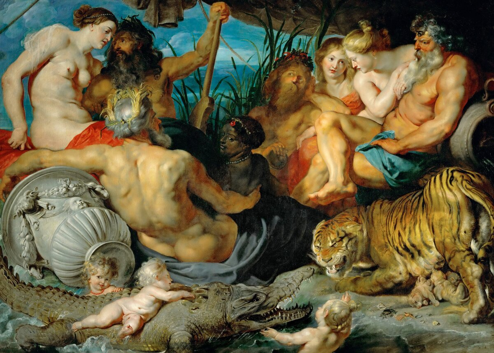
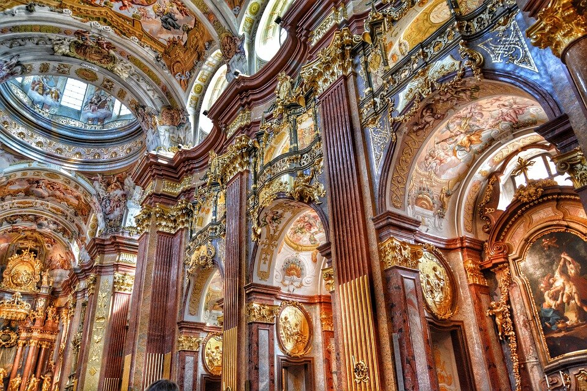

По выражению философа Жилья Делёза, понятие «барокко» отсылает нас к характерной черте — непрестанному производству складок в направлении двух бесконечностей: складки материи и сгибы в душе. И в основе своей барокко — это не столько стиль, сколько одна из ключевых констант человеческой психики, а возможно и принцип организации мироздания как такового.
В своей книге Делёз, анализируя философские представления Лейбница, соотносит их с художественными и мировоззренческими практиками 17 века и приходит к выводу, что барокко утверждает новую гармонию мира, гармонию бесконечности и текучести. В такой оптике мир представляет собой не завершенный факт, а плавные переходы, серию событий.
«Само событие, с одной стороны, носит точечный характер, с другой стороны, поскольку оно связано с другими событиями, его необходимо рассматривать как носящее континуальный характер, что на поверхности мира фиксируется как невозможность для события существовать изолированно от других событий», Делёз.
Это и есть складка, но не как застывшая форма, а как процесс постоянного сгибания/разгибания переплетающихся друг с другом сил материи и духа. Барочная «грамматика» заменяет Аристотелевскую, в ней «предикат прежде всего является отношением и событием, а не атрибутом». Если расшифровать, то получается что-то вроде замены представления «дерево является зеленым» на представление «дерево зеленеет». То есть, Лейбниц уходит от определения объекта через качество, а субъекта как сущности.

Для Лейбница мышление — это непрерывный процесс, а мир текуч и изменчив, переходы в нем постепенны и неуловимы, как бесконечные волны или динамичная игра складок. Иначе говоря, мир — это не прилагательное, мир — это глагол; объект становится вариативным, изменчивым, он часть континуума, непрерывной цепи событий, он и есть само событие. А некоторая определенность и фиксированность этого события проявляется исключительно через личный взгляд человека, субъекта, душа которого «схватывает» своими органами восприятия вибрации складок материи. Но поскольку душа обладает своими многочисленными внутренними изгибами (складками) и неспособна развернуть и объять сразу все, то картина мира всегда предстает как некая индивидуальная точка зрения (кстати именно Лейбниц автор этого устойчивого словосочетания, так популярного сегодня).
Именно поэтому искусство барокко особо не увлекается проблемой точного воспроизведения природы, его больше волнует внутренний мир художника. Так на смену реализму Высокого Возрождения приходят попытки проникновения в душу человека как творца, как трагичного процесса беспрестанного саморазворачивания смыслов, идей и неопределенностей. Трагичного, потому что этот процесс незавершаем по определению, в силу бесконечности и спутанности мира, но только во взаимопроникновении и взаимодействии складок материи и изгибов души — есть человек. Это и есть барокко — «борьба различных мироощущений и мировоззрений, методов познания и способов художественного творчества, фанатического мистицизма и полного религиозного индифферентизма».




Как писал Делёз, анализируя Лейбница можно лучше понять, в чем барокко переходный период: классический разум обрушивался под ударами диссонансов эпохи и бунта беспокойного человеческого сознания, но барокко — стало последней попыткой восстановить классический разум, распределяя эти диссонансы по «личным мирам» (точкам зрения), отделенным друг от друга границами складок.
«Мир барокко – мир, в котором нет покоя». Бунин.